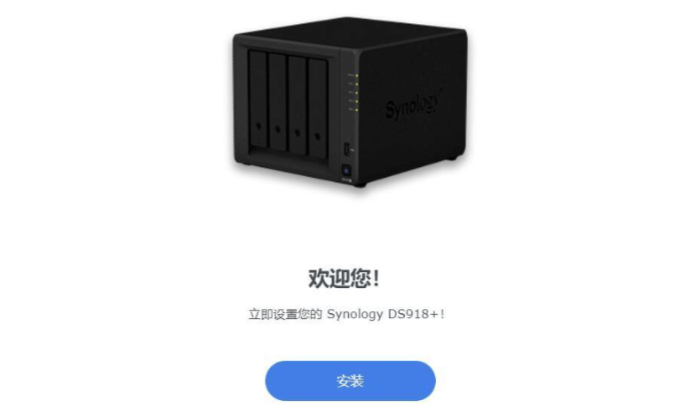

在PVE安装群晖
本文将记录如何在PVE虚拟平台里安装NAS黑群晖的方法
PVE准备
镜像下载
pve运行黑群晖NAS需通过一个arpl引导来启动，直接在**https://github.com/fbelavenuto/arpl/releases**可以下载到，在它的release栏目里如图示下载后缀为img的文件。
镜像上传
如图依次点击左侧的【pve——local(pve)——ISO镜像——上传】将文件上传到pve。
上传好后我们记录下保存的路径，等下在添加镜像硬盘是有用。
NAS虚拟机
新建虚拟机
“常规”按需设置下虚拟机名称即可；
“操作系统”界面勾选“不使用任何介质”其余默认即可；
“系统”界面全部默认，直接点“下一步”；
“磁盘”界面可以按默认，直接点“下一步”；后续可以在加容量（减容量就比较麻烦了）

“CPU”界面按需设置即可，“类别”选了“host”，“启用NUMA”也勾上了；

“内存”按需设置即可；
“网络”暂时就默认好了。
最后确认，创建虚拟机即可
加载镜像硬盘
把在PVE上传的arpl镜像转成NAS虚拟机的磁盘用作系统引导，如图到“shell”界面输入如下：
1 | qm importdisk 100 /mnt/pve/NAS-1/template/iso/arpl.img local-lvm |
启用镜像硬盘
在虚拟机的“硬件”找到添加的未使用的硬盘，双击它，将“总线/设备”改为SATA。
设置启动引导
在虚拟机的“选项”，双击“引导顺序”，勾选“SATA0”，取消“net0”勾选，调整引导顺序将SATA放首位。
硬盘直通(可选)
回到“shell”界面，在命令行输入查看硬盘id，
1 | ls /dev/disk/by-id/ |
如图示，要找到硬盘而不是硬盘分区；然后再输入：
1 | qm set 101 -sata1 /dev/disk/by-id/ata-Lenovo_SSD_SL700_480G_xxxxxxx7836 |
将存储盘直通给群辉，这里101同样是虚拟机的id，由于我们刚才挂了个sata盘在虚拟机下，所以这里是sata1，ata-后面填刚才获取到的硬盘id，回车出现如图示内容就好了。
配置引导
启动虚拟机，来到控制台界面，一会儿就能看到如图示界面，记下ip，
配置型号
在电脑浏览器输入地址，来到ARPL的配置页面。以我系统为例：
1 | Choose a model：DS918+ |
编译引导
设置好sn码后会自动弹出下个界面，我们选择“Build the loader”点击“ok”来编译引导，等待一会编译完成后会自动弹出下个界面，
选择“Boot the loader”点击“ok”启动引导。
可以看到群辉的ip地址，在浏览器输入IP:5000就可以进到群辉的配置界面

NAS安装
点击“安装”按钮后会让你选择DSM的安装方式，
选1则下载最新安装，本次不按这个选项下载安装。
选2则是，浏览“从计算机手动上传.pat文件”。这个文件可以在下载中心获得。
点击下一步，等待安装完成，自动重启后就能进到群辉后台了